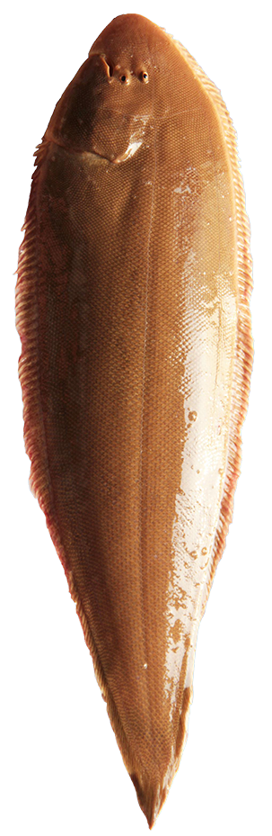

서해안의 모래와 갯벌 바닥에 서식하는 바닷물고기 박대.
납작하고 길쭉한 몸에 한쪽으로 몰린 작은 눈, 비뚤어진 입까지. 어딘가 억울하고 하찮아 보이는 표정이 특징이다.
독특한 생김새와 달리,
군산에서는 다양한 요리로 사랑받는 지역 특산물이다.

군산시가 지역 특산물인 박대를 홍보하기 위해 선보인 캐릭터.
처음 공개됐을 때는 "너무 성의 없이 그린 것 아니냐"는 반응을 얻었지만, 실제 박대 사진이 공개되자 분위기는 반전됐다.
실물과 놀랍도록 닮은 모습에 "이게 진짜 하이퍼 리얼리즘이다!"라는 반응이 이어졌고,
특유의 하찮고 귀여운 매력으로 주목받기 시작했다.